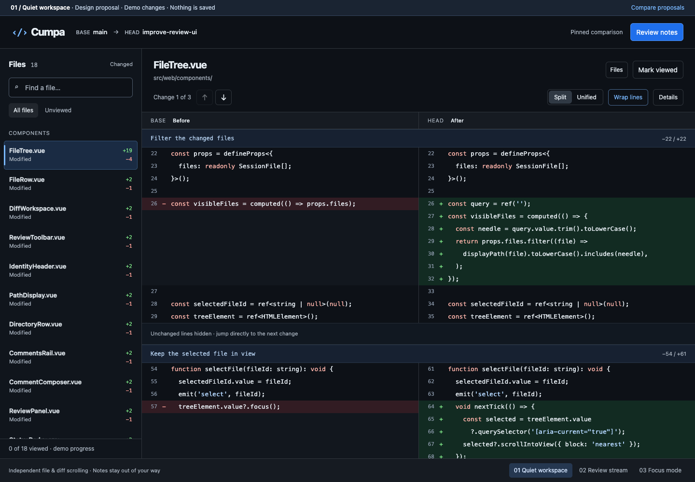
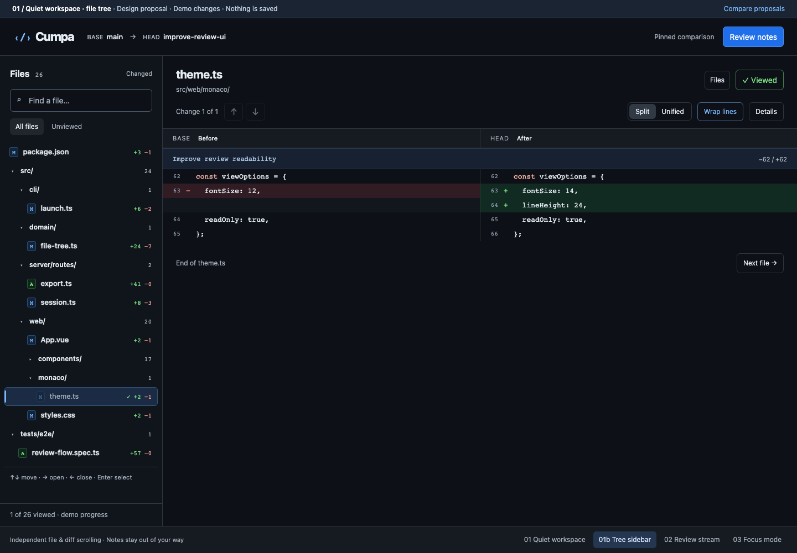
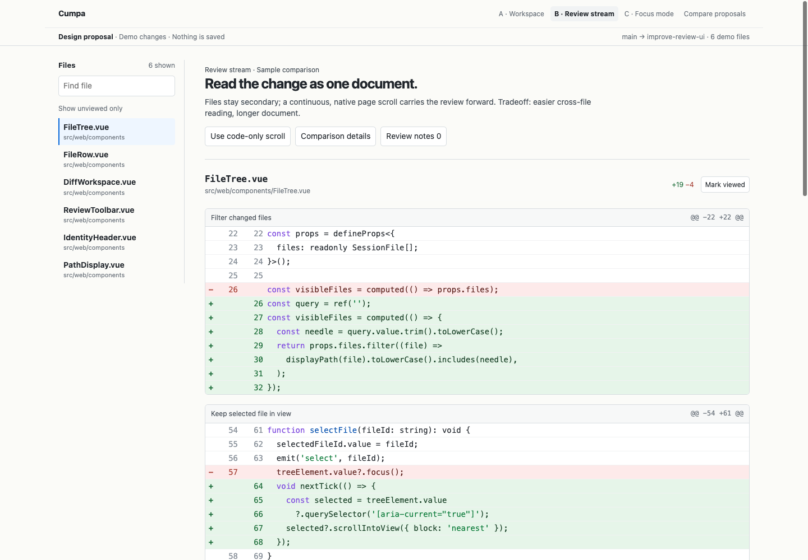
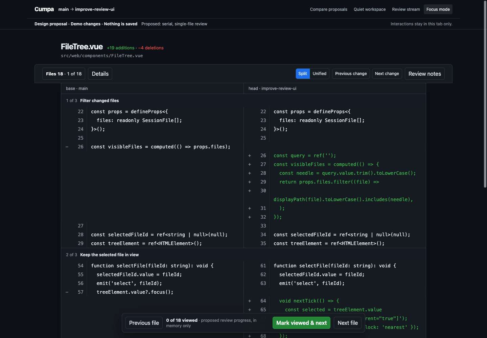

01 Smallest departure

Quiet workspace
A searchable file list and one generous split diff. Independent scrolling keeps navigation in place; comparison details and review notes stay out of the way.
Best for: moving freely between files.
Tradeoff: the sidebar uses some code width.
Open quiet workspace →
01b 01 with the real file tree

Quiet workspace · file tree
Proposal 01 with the shipped files sidebar: nested directories, compacted single-child paths, status badges, viewed state and full keyboard tree navigation.
Best for: keeping repository structure while reading diffs.
Tradeoff: each level costs indentation and a little vertical space.
Open tree sidebar →
02 Document-style reading

Review stream
Read changes as one continuous document. A sticky index jumps between files, while unified diffs and file headings preserve context as you scroll.
Best for: reading across related files.
Tradeoff: longer page, no side-by-side comparison.
Open review stream →
03 Maximum reading space

Focus mode
Give the code the whole stage. Review one file at a time, move through changes, and open the searchable file chooser only when you need it.
Best for: focused sequential review.
Tradeoff: the full file map is one click away.
Open focus mode →